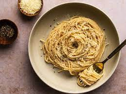

Cacio E Pepe

Preparation time: 20 Minutes
Ingredients:
Yield: 4 servings
- Salt
- Handsome amount of olive oil
-
1½ cups finely grated pecorino Romano, plus more for dusting completed
dish
- 1 cup finely grated Parmigiano-Reggiano
-
1 tablespoon ground black pepper, plus more for finishing the dish
-
¾ pound tonnarelli or other long pasta like linguine or spaghetti
Instructions:
-
Put a pot of salted water on to boil. In a large bowl, combine the
cheeses and black pepper; mash with just enough cold water to make a
thick paste. Spread the paste evenly in the bowl.
-
Once the water is boiling, add the pasta. The second before it is
perfectly cooked (taste it frequently once it begins to soften), use
tongs to quickly transfer it to the bowl, reserving a cup or so of the
cooking water. Stir vigorously to coat the pasta, adding a teaspoon or
two of olive oil and a bit of the pasta cooking water to thin the
sauce if necessary. The sauce should cling to the pasta and be creamy
but not watery.
-
Plate and dust each dish with additional pecorino and pepper. Serve
immediately.
Back